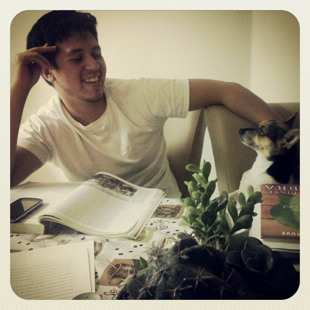

Jorge Hernandez
Email: Jhr1993@gmail.com || Github Profile

Summary
Self-taught developer looking for opportunities
to expand my knowledge and grow.
Education
- Bachelor of Journalism and Mass Communication -
Texas State University(2017-2019)
Work Experience
Help Desk Technician - Akkodis
June 2024 - Present
-
Provide technical support utilizing ticketing
system to respond to inquiries and issues via phone,
email, or in person in a timely and courteous manner
-
Utilize Active Directory to set up new accounts,
reset passwords, and assist with account permissions
and access
-
Image, test, and deploy desktops/laptops/accessories
for new users
-
Diagnose and resolve technical issues related to operating
systems, applications, networking, and peripherals
Access Control Technician/Fleet Management
Coordinator - Convergint Technologies
July 2023 - June 2024
-
Installed and troubleshot access control hardware
including Lenel/Software House boards, locks, door
contacts, card readers and Request to Exit accessories
-
Installed and configured security cameras from various
manufacturers including Avigilon, Axis, Panasonic,
Verkada, Bosch
-
Assisted with managing fleet of work vehicles, ensuring
vehicles were up to date on registration and maintenance
-
Troubleshot network issues pertaining to camera NVRs and
access control boards
-
Utilized Microsoft excel to edit and create Programming
landing sheets
IT Technician - Geiger Communications
August 2022 - July 2023
-
Installed, programmed, and troubleshot hardware/software such
as PCs, monitors, cameras, printers, POS systems, network
switches, and routers
-
Utilized ticketing software to ensure quick turnaround of
client requests
-
Provided 24/7 service to clients in person and over the
phone
-
Coordinated with Project Managers and General Contractors
to ensure projects were on schedule
Skills
-
Technical Skills: Python, C#, JavaScript, Java,
SQL, Bash, Git
-
Tools: Adobe Audition, Photoshop, Illustrator, InDesign,
Microsoft office 360, Ableton Live, WordPress, Wix, Square,
SuperOps, Aterra, Meraki
-
Additional Languages: Spanish (Fluent)
-
Guitar Hero: Expert